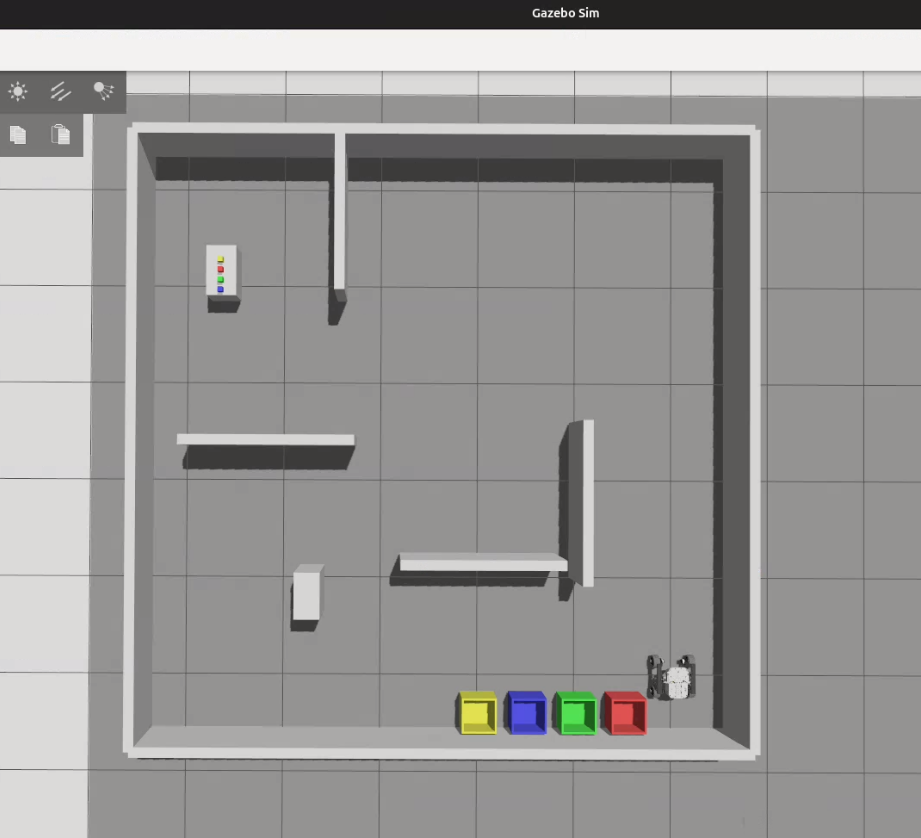
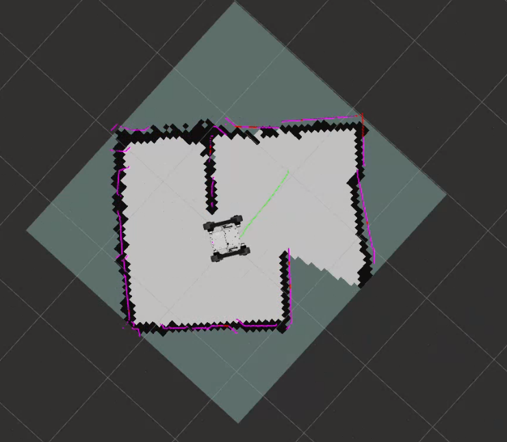
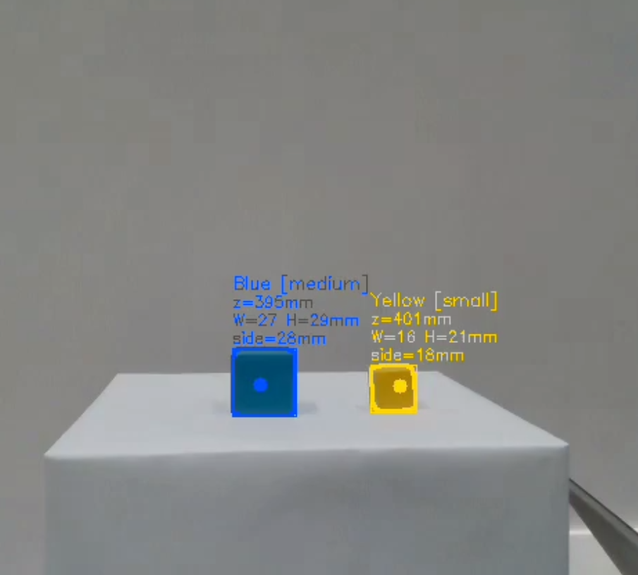

Project goal
Design and demonstrate an autonomous robot that searches an arena, detects coloured objects, retrieves them, returns to the start area, and places each object into a matching coloured bin.
Project portfolio
A selection of robotics, simulation, software, and engineering projects demonstrating my technical development across autonomous systems, mechanical design, numerical modelling, and applied programming. Each project includes the problem context, project goal, my specific contribution, tools used, outcomes achieved, and supporting evidence such as reports, repositories, images, videos, or demonstrations.
Robotics systems design
Team project using a Leo Rover 1.8 platform, low-mounted LiDAR, RGB-D camera, myCobot 280 manipulator, NUC, ROS 2 Jazzy, Gazebo, Nav2, and object-detection logic.

Design and demonstrate an autonomous robot that searches an arena, detects coloured objects, retrieves them, returns to the start area, and places each object into a matching coloured bin.



Mechanical Design
A modular mechanical payload architecture designed to integrate sensing, computation, and manipulation hardware onto the Leo Rover platform.

The goal was to design a structurally sound, modular, and reversible payload sled for the Leo Rover. The sled needed to support the LiDAR, RGB-D camera, manipulator arm, Intel NUC, and cable routing while preserving sensor fields of view, access to the rover, and overall system stability.
I completed the full mechanical design and analysis of the payload sled. This included the four-plate architecture, component placement strategy, LiDAR adapter integration, NUC holder, camera/manipulator mounting arrangement, connector design, plate thickness selection, manufacturability justification, and structural validation using finite element analysis.
The final payload sled provided a modular and manufacturable mounting architecture for the complete autonomous mobile manipulation system. It separated the front sensing/manipulation module from the rear compute module, improved access and maintainability, reduced sensor obstruction, and provided a structurally validated platform for final integration.
Engineering simulation
These projects show transferable competencies in modelling, numerical methods, experimental reasoning, and engineering communication.
Goal: Predict grain boundary movement in steel during annealing using a Monte-Carlo Potts model.
My contribution: Developed a C++ simulation model using crystallographic texture and Kernel Average Misorientation as inputs, supporting a 25% reduction in annealing time and an estimated impact of over 12 crores.
Goal: Model electromagnetic stirring behaviour to disrupt dendrite formation during steel casting.
My contribution: Built a multiphysics simulation workflow combining CFD and electromagnetic analysis to support process understanding and new product development decisions.
Goal: Implement and accelerate image-processing computation using parallel programming.
My contribution: Developed a C++/OpenMP implementation and achieved significant speedup, demonstrating algorithmic optimisation and parallel computing ability.
Goal: Replace a nut-bolt assembly with a cam-based retention mechanism to reduce service and assembly time.
My contribution: Modelled the cam profile, achieved 176 kN preload, incorporated non-linear Belleville spring behaviour, and supported a more serviceable product concept.